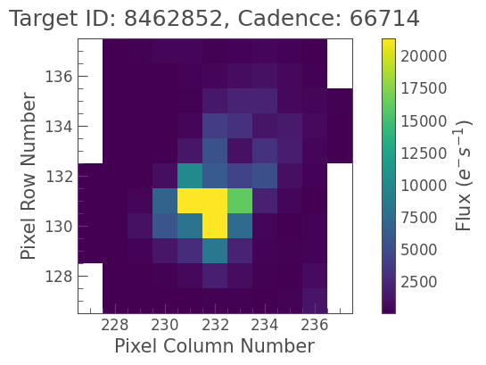

Quickstart#
If you have a working version of Python installed on your system, it is easy to install Lightkurve and its dependencies using the pip package manager. In a terminal window or Jupyter notebook cell, type:
! python -m pip install lightkurve --upgrade
See our installation instructions page for details and troubleshooting information.
With Lightkurve installed, it is easy to extract brightness time series data (astronomers call this a light curve) from the tiny images of stars collected by NASA’s Kepler and TESS planet-hunting telescopes.
For example, let’s download and display the pixels of a famous star named KIC 8462852, also known as Tabby’s Star or Boyajian’s Star, which is known to show unusual light fluctuations.
First, we start Python and use the search_targetpixelfile function to obtain the Kepler pixel data for the star from the data archive:
[1]:
from lightkurve import search_targetpixelfile
pixelfile = search_targetpixelfile("KIC 8462852", quarter=16).download();
Next, let’s display the first image in this data set:
[2]:
pixelfile.plot(frame=1);

It looks like the star is an isolated object, so we can extract a light curve by simply summing up all the pixel values in each image:
[3]:
lc = pixelfile.to_lightcurve(aperture_mask='all');
The above method returned a LightCurve object which gives us access to the number of photons received by the spacecraft over time (known as the flux). The time is an AstroPy Time object in units of days:
[4]:
lc.time
[4]:
<Time object: scale='tdb' format='bkjd' value=[1472.11777934 1472.13821223 1472.15864492 ... 1557.91762194 1557.9380561
1557.95849016]>
The flux is an AstroPy Quantity object in units electrons/second:
[5]:
lc.flux
[5]:
We can plot these data using the plot() method:
[6]:
lc.plot();
The plot reveals a short-lived 20% dip in the brightness of the star. It looks like we re-discovered one of the intriguing dips in Tabby’s star.
Congratulations, you are now able to make new discoveries in Kepler and TESS data!
Next, head to our tutorials section to be guided through more detailed examples of carrying out science with Lightkurve!